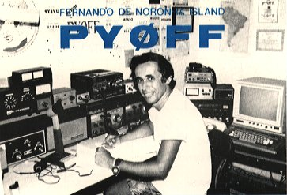

Saipan Is.
【Back Issues Nov.98】
30.Nov.98
(13:00-c) 9M-TV 03:30 48.24/25/260 - (XU2A 04:06 50.110 CW JA2) V73AT 04:39 50.110 CW VK-TV 04:55 46.172 -- *V73AT 04:55 50.110/150 SSB V73SIX 05:00 50.014 CW Beacon VK4BLK 05:09 50.120 SSB ◎ 東南アジア方面のコンデションも今日は一休み。 昼過ぎに48MHz帯のTVが一時上昇してきたが、間も なくフェードアウト。 この時間に短時間XU2Aの入感がリポートされているが、1エリアでは確認出来なか った。 ◎ VK9LX(Lord Howe Is)のDX Pedi.も残すところ明日一日だけとなったが、一度ハワイからビーコンら しい電波を受信したとのリポートがあっただけで、まだ何処からもQSOのニュースは流れてこない。 先週末のコンテストがらみの運用なので、6mにはあまり期待してはいなかったとはいえ、聞こえてもおか しくないコンデションも何度かあったのに残念。 一方、11月18-22日の予定で同じLord Howe Isから6mのQRVを予定していたVK4JSR/VK9Lは、聞くところ に寄ると、設置したアンテナが強風のため飛ばされ、6mでの運用が出来なかったとのこと。 JAとのQSO を楽しみに張り切っていただけに、こちらも残念な結果だった。
◎ 6mがらみのDX-Pedi(一部運用中)
XZ1N (Myanmar) 21.Nov-14.Dec CW/SSB 50.110MHz OP NA7DB & W's QSL W1XT
VK9LX (Lord Howe Is.) 22.Nov-1.Dec. CW/SSB 50.110MHz QSL via VK2ICV
XU1A(Cambodia) 26.Nov-4.Dec. 160-6m OP.JH1AJT.JF1IST.SM's.VR2 etc.
QSL via JH1AJT
|
29.Nov.98
(10:00-a) XU1A 03:30 50.110 SSB XU2A 03:50 50.135 SSB (XZ1N 09:20 50.110 CW JA4-6) ◎ ここのところ東南アジア方面が連日入感して6mを賑わせているが、近隣諸国のアクティビティさえ有れ ば、6m DXも結構楽しめるという証明。 国が隣接しているヨーロッパでは、EsシーズンだけでDXCCの100 エンティティーが完成出来ると言うのも実感として納得できる。 昨日(28日)の昼に50.110MHzで短時間入感して、JA0エリアからリポートされていた9M6GY(Godfrey)のXYL、 9M6JY(Stella)からの連絡では、9M6GYは"9M6JUから譲り受けた"4EL HB9CVを上げ、IC-706で50.110MHzで 初めて電波を出したとのこと。 たまたま、同じ周波数でV8Aが出ていたため、この局を呼ぶJAがQRMとなったため、50.105MHzに移ったも のの、その後はパワーラインのノイズでQSOは出来なかったとのこと。 9M6GY/9M6JYは、JAとのオープン の時間は把握しているので、出来るだけQRVしたいと言っている。28.Nov.98
(12:00-e) V8A 03:10 50.110/120 SSB (9M6GY 03:11 50.110 SSB) VK4KK 03:56 50.110 SSB XU1A 04:20 50.110 SSB QSX OP JF1IST/JH1AJT UP 5-10KHz XU2A 05:09 50.125/133 SSB QSX UP 10KHz V8A 05:16 50.105 CW *XU2A 06:20 50.127 CW/SSB V73AT 07:39 50.110 CW V73SIX 07:40 50.014 CW ◎ 48MHz帯のTVは、01:20z頃からが上昇してきたが、03:00z過ぎにV8A、9M6GYの2局の入感がクラスター にリポートされた。 この時点では、1エリアではV8Aの信号はまだ弱く、9M6GYは確認できなかった。 03:18zに1エリアでも何とかQSO出来る信号まで上昇してきたが、入感している時間は短くすぐに聞こえ なくなった。 入れ替わりに50.110MHzでXU1AのSSBが入感してきた。 当初弱かった信号も、04:30z前後 からRS59まで上昇してきた。 JF1IST/JH1AJTのオペレートで10KHz UPでコールするJA'sを軽快にさばいて いた。 この後、XU1Aをスプリットで呼んでいるJA局の混信を避ける様に、50.125/130MHzでXU2Aが入感し てきたが、信号はXU1Aの方が強かった。 05:00z過ぎから50.105MHzでV8AのCWが再び聞こえてきたが、信号は相変わらず弱いものだった。 コンテストの参加で6mのQRVが心配されていたXU、V8だったが、XUが2局同時に入感するなど、週末の6mは 東南アジア方面の入感で賑わった。27.Nov.98
(12:00-b) ZL-TV 01:30- 45.24/25/26 - VK-TV 02:15- 46.172 -- V73AT 04:40 50.110 CW VK8MS 05:39 50.110/140 SSB *V73AT 05:49 50.105 CW/SSB XU1A 08:05 50.110 SSB ◎ コンデションは明らかに昨日よりは落ちていた。 昨夜からHF帯で出てきたXU1Aは、今日もHF帯で アクティブにQRVしていた。 04:00zに21MHzでQSOした時点で、「6mのアンテナは、今JF1ISTが建設中」 との情報だったが、XU1Aが6mに出てきたのは08:00z。 2エリア以西ではRS59でQSOしていたが、1エリア では平均して信号は弱く、10分程度で聞こえなくなった。 今日は、XU2A、XZ1Nの入感は確認されていない。 V73ATは久しぶりに強力だった。 ◎ 昨日(11月26日)のオープンで山形のJR7HKY等、7エリアの2局がV8A(ブルネイ)とのQSOに成功した。 V8Aは日本人による運用で、10月22日に21MHzでQSOした際にも、6mにQRV出来ると話していた。 6mは10Wの運用だが、このコンデションが続けば、場所的にも"9M6"なみの伝搬が期待出来る。 ただし、V8Aはコンテストがらみの局なので、コンテストが始まってしまう週末に6mにQRVするかどうか は不明。 今回の運用は月曜日(30日)までの予定。 QSLはJH7FQK宛。26.Nov.98
(10:00-a) ZL-TV 02:00 45.24/25/26 - VK-TV 02:30 46.172 -- VK4PU 05:09 50.110 SSB VK4VW 05:21 50.110 SSB 9M-TV 05:35 48.24/25/26 - XU2A 05:39 50.110/120 SSB/CW QSL VIA XU2C(7L1MFS) XZ1N 05:50 50.110/115 SSB/CW *XU2A 08:10 50.110 CW/SSB ◎ 05:00z過ぎから上昇してきた48MHz帯のTVに続いて、強力なXU2AのSSBが50.110MHzで聞こえてきた。 5分ほどで50.115MHzにQSY、5KHz UPのスプリットでJAをさばいていた。 05:50z頃からXU2AがQSYしたあとの、50.110MHzにXZ1NがSSBで入感してきた。 今日は1エリアにも強力 で、ピークでは"正真正銘"RS59の信号だった。 XZは07:10z頃までSSB/CWできこえていたが、スプリット の"UP"指定を無視して呼んでいる局がかなりいた。 こんな局は何度呼んでも応答は無い。 ときには 少し相手の信号を聞く"余裕"がほしい。 XU2Aは08:10z頃からも50.110MHzのCW/SSBで再び入感していた。 ◎ 9V8、9M6、XU、XZ...と、ここのところ連続してQRVしている東南アジア方面のエンティティーだが、 これが全てJAにオープンしているのは嬉しい。 普段は48MHz帯のTVを聞いて、この方面へのオープンを 予測するだけだったが、局さえ出てくれれば聞こえるコンデションになっている事の証明といえそう。25.Nov.98
(10:00-a) VK-TV 03:45- 46.172 -- 9M-TV 05:17- 48.24/25/26 - XU2A 06:12 50.110 CW V73AT 06:18 50.110 CW *XU2A 06:20 50.115/110 SSB ◎ 昨日とは打って変わって45/46MHz帯のZL/VKのTVもほとんど上昇せず、太平洋方向は静かなコンデ ション。 05:00z頃から南西方面の48MHzのTVが強力に入感してきた。 これから約1時間後、昨日に引き続いて XU2Aが50.110MHzのCWで入感してきたが、1エリアでは信号も弱く10分程度でファードアウトした。 予定では明日からXU1AもQRVする事になっているが、今日もクラスターではXU2A/XU1Aの情報が入り混 じって混乱していた。 素早い情報提供もいいが、コールサインは良く確かめてからにしたら？。 今日もフレアーノイズが多い一日だった。 ◎ HC8(Galapagos Is.)からの運用が24日から8日間の予定で行われているが、参加メンバーがHC5Kや HC8DHなど、6mではアクティブな局なのだが、残念ながらこのコンデションでのQSOは"沖縄"からでも まだ無理？24.Nov.98
(12:00-c) ZL-TV 02:00- 45.24/25/26 - VK-TV 02:00- 46.172/240 -- ZL3NE 04:58 50.109 CW ZL3TY 05:03 50.110 CW XZ1N 05:33 50.115/110 CW/SSB N7ET/DU7 05:24 50.110/104 CW XU2A 07:16 50.115/150 CW/SSB VK8RAS 07:32 50.047 CW Beacon VK6RSX 07:38 50.304 CW Beacon ◎ 午前中から45MHz(45.240/250/260)のZL-TVが良く聞こえていたが、05:00z頃になってZL3が2局入感。 信号は弱くコンデションは長続きしなかった。 1エリアでZLがフェードアウトする頃から西日本ではXZ1Nの入感が始まった。 西日本でRS59で入感し ているXZも、05:20z頃にはまだ1エリアでは確認出来なかった。 05:30z頃になってようやく聞こえだし たが、信号はピークでも"RST569程度"が正直なところ。 XZ1Nは50.115MHzのCWから、06:00z頃には50.110MHzのSSBで再び出てきた。 相変わらず信号は弱いも のだった。 １エリアからもRS59のリポートを送っている局もいたが、QSOは"もたついて"いたので、実 際には"相手の送信内容が良く確認出来ない"程度の強さだったのかも？。 XZのコンデションが西日本に移動した後、同じ周波数でN7ET/DU7が出てきて、これとQSOするJAが混信に なり、この時間のXZ1Nは終わってしまった。 09:00z台には再び4-6エリアで強力なXZ1Nの入感が続いた。 今日のXZの東日本へのオープンは、1エリアまでで、7、0エリアでは入感していない。 尚、XZ1Nの日 程は12月14日まで延長された。 XZ1Nと入れ替わる様に、50.115MHzでハイスピードのCWでXU2Aが入感してきた。 XZと同じ周波数だっ たため、呼ぶJA局側もコールサインを確認するまで混乱していた。 こちらも1エリアでは弱かったが、XZが入感しなかった7、0エリアではRST599で聞こえていたとのこと。 XU2Aは07:00zに50.150MHzのSSBにQSYしてJA'sをさばいていた。 このXU2Aは昨年の5月にも入感しているが、今月26日から予定されているXU1Aとは別グループ。23.Nov.98
(14:00-d) VK4KK 02:43 50.110 SSB VK4GPS 02:45 50.110/130 SSB VK2AFH 02:49 50.110 SSB VK2YHC 02:55 50.110 SSB VK4PU 03:00 50.150 SSB VK2DN 03:45 50.110 CW VK3DQJ 03:45 50.125 SSB VK4TVI 03:46 50.110 SSB YC1MH 06:35 50.110 SSB WH7C/DU1 07:18 50.150 SSB OP & QSL JG1OUT DU100GF 07:54 50.115 SSB (XZ1N 08:35 50.110 SSB JA4-6) ◎ 午前中から46MHz帯のTVが強力に入感。 正午近くになってVK4、3、2が立て続けに入感してきた。 午後になって48MHz帯のTVも上昇してきたが、"9M6"からのQRVは今日は無い！。 9M6JUで使用した 4ELのHB9CVは、地元の9M6GY/9M6JY(XYL)にプレゼントしたので近日中にはIC-706でQRVする予定。 今回も9M6とのQSOに失敗した局は"次"に期待。 西マレーシアの9M2NK・中村さんが地元のTVからの妨害でQRVの周波数に苦労されていたが、東マレー シアのコタキナバル(9M6)では、TVからの電波で50MHz帯が妨害されることはなかった。 コタキナバル で聞いた感じでは、マレーシアのTVと言われている48MHz帯のTVは、日本で聞く強さとそれほど変わら なかった。 先日もコタキナバルの南西、サラワク州とサバ州の境界にあるラブアン(Labuan)島からQRVしていた 9M6NA(JE1JKL)中村さんは、先日のQRVでTVIに悩まされたとのことだが、今回9M6JUを運用したコタキ ナバルの郊外(市街地から約20Km南方)のリゾートホテルでは、幸いにもTVIのトラブルは無かった。


9M6JUの運用場所となったリゾートホテルのロッジ(右側の建物)
使用RIGはFT-847 ANTは"移動の定番?"4EL HB9CV。 HF帯はG5RV
◎ 昨日沖縄でQSO出来た(08:00z)MiyanmarのXZ1NとのQSOは、今日は西日本(JA6、4)でリポートされて いるが、1エリアでは入感していない。 距離的にはXZも"射程内"だが、方向が西に寄っている分だけ、 東日本からのQSOは難しい。 短時間のオープンだったが、YC1が聞こえていたので、コンデションは悪 くない。 ◎ プラタスのBQ9Pを運用したJA1BK・溝口さんによると、今回のBQ9Pの総QSO局数は37,600局。 残念ながら6mでのJA本土とのQSOは出来なかったが、VR2's、BV、9M6JU、JR6とQSO出来た。 ◎ 先日、シンガポールのSEA NET CONVENTIONの記念局・9V8SEAを運用したJI1DMH・熊谷さんからのリ ポートによると、今回の6mの運用でQSO出来たJA'sは、SSB=64局、CW=42局の計106局(CW/SSBのダブり を含む)だった。 QSOの最も多かったのはJA2エリアの23局。続いてJA1=19、JA3=17、JA4=13、JA9=10、JA6=9、JA5=7、 JA0=5、JA7=3局となっているが、今回もJA8とのQSOは無かった。 尚、今回シンガポールから50MHzを運用した日本人は、JI1DMHの他、JE7RJZ(野田)、9V1ZB(中村)の各局。22.Nov.98
(16:00-a) ◎ 11月17日からの9M6JU(東マレーシア)の運用は22日の午前中(03:00z)で終了、帰国。 期間中はコン デションに恵まれ、6mでのQSOは延べ612局だった。 今回はJA以外のQSOにもトライしてみたものの、期 待していた"超DX？"とのQSOはなかった。 時期を同じくして運用していたBQ9P(Pratas Is)が、VR2(ホンコン)以上に頻繁に入感していたのは予 想外だった。 今回も沖縄とJA本土の"格差"を見せつけられた。 JAがオープンしていても9M6では沖縄 は同じ時間には入感してこなかった。 11月17日の08:05zにBQ9Pが沖縄のJR6HIとQSOしているのが聞こ えたが、この時も沖縄は聞こえなかった。 このQSOの最中にJA1やJA6の局が同じ周波数でCQを出してい るのが、9M6では良く聞こえていた。 9M6→JAと、BQ9→JR6、BQ9→9M6はオープンしているが、BQ9→JA のオープンは残念ながら無かった？。 9M6で沖縄が聞こえたのは深夜になってから。 9M6での運用の詳細は順次紹介の予定。 11月下旬から、12月にかけてのDX-Pediが"目白押し"なので、当分50MHz帯から目が離せない。16.Nov - 21.Nov.98
(00:00-a) ◎[お知らせ] 11月16日から22日の一週間、東マレーシアのコタ キナバルから6mを中心に運用します。 コールサインは9M6JU。 6mでは50.110MHzでCQを出しますが、オープン後は50.115MHzにQSY (現地の状況によっては変更することもある)します。 尚、この移動の期間中は、ホームページ「今日の 6m BAND !」の更新はお休みさせて頂きます。 [JA1RJU 小笠原 一夫]
◎ 11月から12月にかけて6mがらみのDX Pediの運用が幾つか予定されている
BQ9P (Pratas Is.) 12-19 Nov. CW 50.015MHz QSL via KU9C
SSB 50.125MHz
9M6JU (East Malaysia) 16-22 Nov. CW 50.110MHz OP & QSL JA1RJU
(CW CQ Beacon)
CW/SSB 50.115MHz
VK4JSR/VK9L (Lord Howe Is.) 18-22 Nov. CW/SSB 50.110MHz OP & QSL VK4JSR
XZ1N (Myanmar) 21.Nov-7.Dec CW/SSB 50.110MHz OP NA7DB & W's QSL W1XT/7
(CW CQ Beacon)
VK9LX (Lord Howe Is.) 22.Nov-1.Dec. CW/SSB 50.110MHz QSL via VK2ICV
XU1A(Cambodia) 26.Nov-4.Dec. 160-6m OP.JH1AJT.JF1IST.SM's.VR2 etc.
QSL via JH1AJT
|
15.Nov.98
(10:00-c) (XE2UZL/B 23:10 50.028 CW Beacon GL=DM10 into JA2) (N6RZ 23:41 50.110 CW into JA2) (KH6HME/B 00:25- 50.062 CW Beacon into JA0) (KH6HME/B 00:40- 50.062 CW into JA1) 9M-TV 02:00- 48.24/25/260 - BY-TV 02:00- 49.750 -- 9V8SEA 02:45 50.085 CW *9V8SEA 03:20 50.085 CW 9M2NK 03:20 50.107 CW ◎ 昨日に引き続いて9V8SEAが入感してきた。 午前中から48MHz帯のTVが上昇、今日は早めのオープ ンが期待された。 9V8SEAは02:40頃から50.085MHzのCWで入感してきたが、昨日同様、東日本ではシ グナルは弱いものだった。 9V8SEAを運用したJI1DMH・熊谷さんのシンガポールからの連絡によると、初日(14日)のオープンでは、 05:50zのJL4GTOとのQSOを皮切りに、64局のJA(JA7、8エリアを除く)とQSO出来たとのこと。 9V8SEAは市内にある20階建ての「アポロホテル」の17階が運用場所になっていて、このホテルの屋 上に50MHzの6エレとHFのR5のアンテナを上げて運用していた。 9V8SEAの運用は、今日の07:00z(現地時間の午後3時)で終了。 尚、シンガポールと平行して、西マレーシアの9M2NK(OP JE1JKL)も06:00z過ぎまで入感していた。 ◎ VR2(ホンコン)からBQ9P(Pratas Is)とのQSOがリポートされているが、時間が17:00z台と、日本時 間では深夜の2時頃。 VR2-BQ9間はGWでも届きそうな距離なのでQSOが出来て当然？ BQ9P(OP JA1BK)から今日(15日)入った情報では、50MHzを運用する予定のBVのメンバーが、肝心の ビーコン装置を"忘れてきた"！!ので、予定していたBQ9Pのビーコンは発射出来ない。 このため、 予定した周波数ではなく、現在は50.110MHz付近をワッチしているとのこと!!。 コンデションが開けそうになったら50.110MHz付近でCQを出すしかない？ ◎ 午前中(00:25-00:40z)にKH6HME(50.062MHz)の入感が、JA1、0エリアからリポートされている。 このハワイの入感の約1時間前にはJA2エリアでXE2UZL/Bの入感とN6RZとのQSOがリポートされているが、 いずれも入感したアンテナ方向は90度。 この日は20:40z頃に、ZL3-W7のオープンがリポートされて いるので、一連の伝搬はこのルートからのスキャッターによるものと思われる。 せっかくのXE2(GL=DM10)とKH6の入感だったが、残念ながら2 WAYのQSOは出来なかった。14.Nov.98
(10:00-d) BY-TV 03:10- 49.750 -- HL1LTC 03:15 50.110 CW 9V8SEA 05:50 50.115 SSB JA4 Open 1st QSO *9V8SEA 05:57 50.115 SSB JA6 Open *9V8SEA 06:10 50.115 SSB JA1 Open RS55 QSB ◎ シンガポールの9V8SEAが入感した。 12日からの運用予定にもかかわらず、昨日までHF帯を含 めて電波が聞こえず心配されたが、05:00過ぎからHF帯で入感してきた。 この頃から48MHz帯の9M-TVが上昇、その直後、JA6エリアで6mの入感がリポートされた。 1エリアではこの時点ではまだ入感していなかったが、2エリアでQSOが始まった06:06z頃から1 エリアでも聞こえだした。 1エリアからQSO出来たのは、06:10zから10数分の短い時間だったが、9V8SEAから送られるリポー トは良かった。 9V8SEAはFT-620・10Wの運用なので、信号が弱く、今日のような"ギリギリ"の オープンでは、入感しているエリアに大きな差が見られた。 9V8SEAは、15日の06:00z(15:00JST)にはQRTの予定なので、明日のオープンが間に合うか微妙な ところ。 期待されている、BQ9P(Pratas Is)は、10:00z現在6mでの入感のリポートはまだ無い。13.Nov.98
(13:00-b) VK2-TV 05:45- 46.240 -- 9M-TV 05:46- 48.24/25/26 - VK2QF 05:45 50.110/107 CW VK2APG 05:50 50.110/130 SSB VK5AYD 06:09 50.110 SSB VK4-TV 06:20 46.172 -- VK4APG 06:36 50.110/125 CW/SSB ◎ 05:00過ぎから46.240MHzのVK2のTVが強力に入感。 直後にVK2'sが聞こえてきたが、オープン は長続きせず、コンデションはVK5、4へと移った。 夕方には48MHz帯のTVが上昇したが、13:00z現在、9V8SEA、BQ9Pの6mでの入感は確認されていな い。 尚、9V8SEAの運用周波数は、最終的に"予定表"の通りに変更になった。12.Nov.98
(12:00-b) 9M-TV 05:30- 48.24/25/260 VK6AOM 06:15 50.130 SSB VK6JJ 07:25 50.100 CW *VK6AOM 08:31 50.110/120 SSB ◎ BQ9P(Pratas Is)のDX-Pediは、05:00z頃から21.295MHz・SSBの運用で始まった。 まだ6mのアンテナは上がっていないので今日の運用はないが、明日以降には合計8局が同時？に 運用が出来る様に準備中とのこと。 9V8SEA(Singapore)のQRVは確認されていないが、6mでオー プンするとすれば、現在48MHzが上昇してくる、06:00z-07:00z前後が可能性として高い。11.Nov.98
(12:00-e) 9M-TV 04:30- 48.24/25/26 - VK-TV 06:00- 46.172 -- VR2ZLP 09:38 50.110 SSB ◎ DXCCの要求度では、HF帯でもBS7H(Scarborough Reef)に次いで3位にランクされている東シ ナ海のPratas Islandの運用が、いよいよ明日(12日)から始まる。 今回はBQ9Pのコールサイン を使用し、19日までの運用を予定している。 プラタスからの運用は、BV9Pのコールサインで過去3回行われているが、50MHzでの運用は1995年 5月から6月にかけて行われた3回目の運用だけ。 この時にはEsシーズンの最盛期でもあり、JA からも多くの局がQSOして、貴重なNewエンティティーをものにした。 今回の運用では、当初50MHzは予定に入っていなかったが、後に144MHzと共に追加された。 BQ9Pの50MHz帯の運用周波数は、CWが50.015MHz、SSBが50.125MHzと、DX Pediの周波数としては 変則的だが、コンデション的には問題はなさそうなので、あとはBVのオペレーターの"やる気"に 期待。 今回は日本からJA1BK・溝口氏がRTTYの運用のため参加している。10.Nov.98
(07:00-a) HL5XF 00:25 50.125/105 SSB HL1LTC 00:38 50.110/136 CW/SSB KH6HME 01:15 50.061 CW Beacon RST529 HL9GMT 03:28 50.110 SSB ◎ 朝から49.750MHzの大陸方面のTVが強力。 昨日は聞こえなかったHL'sが50.110MHz付近でJA を相手にQSOしているのが強力に入感。 01:00z頃からJA6、5など西日本で聞こえだしたハワイ のKH6HME(50.061MHz)のビーコンが、バズの中から1エリアで入感してきたのは01:15z頃から。 CQ DXをコールする5、6エリアの電波は、近場のEs？もオープンしていたため、1エリアでも59+ で入感していたが、残念ながらKH6/KH7からQRVする局は無く、QSOは出来なかった。09.Nov.98
(12:30-g) (PY3ARL 00:30 50.028 CW Beacon JA5) PY5CC 00:38 50.105 CW (PP5JD 00:44 50.115 -- QSO JA6、2) (PY2XB 00:47 50.102 CW QSO with JA5FDJ) (ZP6CW 00:49 50.100 CW QSO with JA5FDJ) (PY0FF 01:29- 50.110 CW QSO with JR6's) V63AO 04:14 50.120 SSB V73AT 08:57 50.110 CW YJ8UU 09:02 50.120 SSB V73SIX 09:11 50.014 CW Beacon VK4ZKF 11:37 50.160 SSB Evening TEP VK4JSR 11:50 50.110 SSB N7ET/DU7 12:17 50.110/102 CW ◎ 早朝から南米の入感で賑わった。 00:00z頃から沖縄で入感したPY、ZPで始まったが、このコ ンデションはその後、JA6→JA5とオープンの範囲を広げ、00:36zにPY5CCの信号は1エリアでも入感 し始めた。 00:38zのJA1RJUとのQSO後、1エリアのパイルアップとなったが、10数分でPY5CCはフ ェードアウト。 JA5、6など西日本ではZP6CW、PY2XB等、複数のPYとのQSOがリポートされている。 本土で南米の入感が一段落した01:30z頃から、沖縄ではPY0FF(Fernando de Noronha)が入感、QSO 出来ている。 PY0/Fも今サイクル初の入感となる。


今サイクルも早々と入感したPY0FF
1991年10月当時はFT757+FTV707と5ELでQRVしていた。
08.Nov.98
(13:00-c) *9V8AG 02:20 28.885 SSB 50.190MHzクロスバンドQSO 9M6NA 02:52 50.114 CW V73AT 02:58 50.140 SSB *NH6YK 03:02 50.110 SSB KH6WU 03:05 50.110 CW KH6HME 03:14 50.062 CW Beacon NH6YK 03:18 50.120 SSB KH7R 04:22 50.110 SSB V63AO 04:24 50.125 SSB V73SIX 04:49 50.014 CW Beacon *V73AT 05:03 50.110 CW VK9NS 05:04 50.110 SSB (UN3G 05:08 50.110 CW QSO with JR6GV) (A45ZN 08:24 50.110 CW QSO with JR6's) ◎ 昨日と同様、午前中から南西方向の48MHz帯のTVが強力に入感していたが、49.750MHzの大陸方 面のTVが弱い分、近場のHLの入感はなかった。 南西方面のパスは昨日よりもFBで、28.885MHz でQRVしてきたシンガポールの9V8AG(Robert)が、6m(50.190MHz)とのクロスバンドQSOにトライ、 多くのJA局がこの局とQSOした。 シンガポールでは、通常6mは許可されておらず、特別に許可された局以外はQRVする事は出来な いので、9V8AGも28MHzとクロスバンドでのQSOとなった。 シンガポールからの6mの運用は過去2回 行われており、JAからもQSOは出来ている。 これらの運用は、JAからの協力によって設置され、 電波伝搬実験局として免許された特別局(9V1ES)からの運用だった。 11月12日からのSea Net Conventionの特別局・9V8SEAが6mにQRVする予定になっているが、このコ ンデションがこのまま続けば、久しぶりにシンガポールから6mの電波が聞こえてくるかも知れない。 ◎ 今日のコンデションは近来にない"ワイド"なオープンとなった。 昨日も聞こえていた東マレー シアの9M6NAに続いて、強力なV73AT、03:00z頃からのハワイの入感へと続いた。 ハワイの電波は 110-120度方向のスキャッターで、信号は強いものではなかったが、ノイズが少ない分了解度は良 かった。ハワイは04:30z頃にはフェードアウトしたが、この後、50.110MHzのSSBでVK9NS(Jim)が入 感してきた。 VK9/N(ノーフォーク)は今サイクル初の入感。 尚、本土でVK9NSとQSOしている同じ 時間帯に、沖縄ではUN3G(Kazakhstan=旧・UL7)がオープン、CWでQSOしている。 UN3G(Val)のリポートによると、05:05-05:38zに、50.110MHzで9局のJA(沖縄？)とQSOしたとのこと。 カザフスタンからは1992年にUL7GCCがアクティブにQRVしていて、多くのJAがQSOしている。07.Nov.98
(08:00-a) VK-TV 00:30 46.172 -- HL5FSZ 03:34 50.180 SSB HL1LTC 04:00 50.110 SSB 9M6NA 06:33 50.114 CW OP & QSL JE1JKL V63AO 07:10 50.120 SSB ◎ 朝から昨日とはガラリと変わったコンデションとなった。 午前中に弱く入感したTVの他は VK方面からの電波は午後になっても全く聞こえて来なかった。 そのかわりに近場の伝搬が上昇、 南西方向からの48MHz帯(24/25/260)のTVと、大陸方面からの49.750MHのTVが強力に入感してきた。 久しぶりにEsシーズン並みのバズの中から、HL'sや国内DXの信号が聞こえていたが、06:20z頃か ら入感した東マレーシアの9M6NA(OP・9M2NK & JE1JKL)は信号も強く、40分ほどJA'sのパイルア ップとなっていた。 夕方からは、昨日のST2SA(スーダン)の入感の影響と思われる？ 50.110MHz付近の"CQ DX"の CWが連続で聞こえていたが、今日のコンデションの"変化"がどちらに影響しているのか興味のあ るところ。 とにかく、最近の沖縄でのコンデションは、日本本土では想像もつかないものとな っている！？。 10月下旬から落ち込んでいたSF/SSNも、ここ2、3日で再び上昇してきた。06.Nov.98
(14:00-b) (PY3ARL/B 00:05- 50.028 CW Beacon Report by JA5CMO) ZL-TV 02:20- 45.24/260 -- VK-TV 02:50- 46.172 -- VK4KK 03:00 50.110 CW VK4KR 03:01 50.110/150 SSB VK4NW 03:06 50.110/160 SSB VK4SX 03:07 50.110 SSB VK4RGG/B 03:15- 50.058 CW Beacon VK2YO 03:25 50.110 SSB VK4PU 03:27 50.150/190 SSB FK8CA 03:29 50.114 CW VK2HO 03:42 50.110 SSB VK2QF 03:43 50.110/106 CW VK4KAC 03:53 50.110/140 SSB VK2YHN 03:59 50.110/145 SSB VK4LR 04:11 50.130 SSB VK4XA 04:27 50.085 CW VK4BRG/B 04:28 50.077 CW Beacon (ST2SA 07:05 50.110 CW QSO with JR6HI) ◎ 今日のコンデションはJA5へのPY3ARLの入感で始まった。 JA5CMO・前田さんは、00:05z(09:05JST)頃に50.028MHzでPY3ARLのビーコンが入感しているのを 確認。 RST559で入感しているビーコンを聞きながら、50.110MHzと28.885MHzでPYを探したもの の、QRVしている局は見あたらず、約一時間後にはビーコンもフェードアウトしてしまったとの こと。 1エリアでも00:10z(09:10JST)頃からこの周波数をワッチしたが、残念ながらビーコン の入感は確認できなかった。 今日のPYのオープンは西日本の太平洋側を中心にしたものだった と思われる。 この入感から約１時間半後の01:27zに、ホンコンのVR2XMTも50.110MHzのPY5CCを 聞いている。 今サイクルになってから沖縄では何度かPYとQSOできているが、本土で入感が確認されたのは 今回が初めて。 明日も同じ様なコンデションが続くとは思えないが、沖縄よりも東に位置する 本土での入感時間は若干早めとなるのでワッチの目安にすると良い。 沖縄のJR6GV・平良さんから、07:05zにJR6HI・知花さんがST2SA(スーダン)とQSO、の情報が飛び 込んできた。 現在確認中だが、ST2SAが6mにQRVしているのは事実なので、このQSOが初の"ST"に なるのは間違いなさそう。05.Nov.98
(10:00-b) ZL-TV 00:45- 45.250 -- 9M-TV 01:15- 48.24/25/260 VK-TV 01:50- 46.172/240 -- (ZP6CW 02:19 50.110 CW QSO with JR6GV) (ZP5AA/B 02:23 50.024 CW Beacon JR6GV) VK4PU 02:43 50.110/251 SSB VK2HO 02:47 50.120/140 SSB VK2YO 02:51 50.130 SSB VK4DMI 02:54 50.110 SSB VK4RGG 03:00 50.058 CW Beacon VK4LR 03:23 50.110 SSB VK4KR 03:38 50.120 SSB VK4BRG 03:45 50.077 CW Beacon VK4KK 03:48 50.110 SSB QSO with HL5XF & HL9GMT VK2YHN 04:04 50.130 SSB VK4TVI 04:07 50.120 SSB VK4GPS 04:39 50.110 SSB QSO with HL9GMT V63AO 04:50 50.120 SSB VK8RAS 05:05 50.047 CW Beacon ◎ 久しぶりに強力なVK2、4が入感。 GL=QG62-65のブリスベーン近辺の局の入感で賑わった。 南西方向からの48MHz帯のTVも午前中から強力に入感していたが、50MHzに出てくる局はいない。 沖縄では今日もZPの入感がリポートされている。04.Nov.98
(12:00-b) ZL-TV 01:00- 45.24/25/260 VK-TV 02:30 46.172 VK8VF 11:45 50.056 CW Beacon ◎ 今日も早い時間から45MHz帯のZL-TVが強力に入感してきたが、50MHz帯までコンデションは 上昇しなかった。 VK-TVも午後になって早々と消えた。 夜間のVK8は上昇。03.Nov.98
(10:00-b) ZL-TV 00:00- 45.260 -- VK-TV 01:00- 46.240 -- VK-TV 02:30- 46.172 -- VK4RGG 03:05 50.058 CW Beacon FK8CA 04:29 50.110 CW V63AO 04:25 50.120 SSB V73AT 09:39 50.110 CW ◎ 早い時間からZL-TVが強力に入感して期待されたが、01:00zには何事もなくフェードアウト。 VKのTV(46.240MHz)が入感して間もなく、VK4RGGのビーコンが聞こえてきたが、50.110MHz付近 では、VK4'sの声は聞こえなかった？。 CQを連呼するJAの他には、弱いFK8CAが入感していた 程度。 JA側では祝日で多くの局がスタンバイしていた様だが、外国では"ただの火曜日"。02.Nov.98
(12:00-c) ZL-TV 01:25- 45.24/25/26-- VK-TV 02:30- 46.172/240 -- V73AT 02:30 50.110 CW FK8CA 02:40 50.110/134 CW V73SIX 03:19 50.014 CW Beacon (PY5CC 03:29 50.110 SSB QSO with 7J6CCU) *V73AT 03:54 50.130 CW VK4APG 04:10 50.110/150 SSB N7ET/DU7 04:35 50.110/104 CW 9M-TV 05:30- 48.230-260 -- BY-TV 05:30- 49.750 -- VK4JH 05:55 50.110/115 CW *VK4JH 11:30 50.110 CW Evening TEP ◎ 午前中に45MHz帯のZL-TVが上昇してきたが、50MHzのZLの入感がないままフェードアウト。 V73ATが早い時間から入感、南東方向のスキャッターで国内も良く聞こえていた。 近場のDXのパスが上昇していて、普段はあまり聞こえてこないV73SIXも、今日は良く入感し ていた。 いつもは夕方から聞こえるN7ET/DU7が、今日は昼過ぎから早々と入感してきたが、 日中のコンデションの方も、夕方前には"早々"と落ちてしまった。01.Nov.98
(12:00-b) VK-TV 02:30- 46.172 -- (PY2AA/B 02:40 50.059 CW Report by JR6GV) (PY2CDS 02:47 50.110 SSB QSO with JR6GV) ZL-TV 03:00- 45.240/250 -- FK8CA 03:16 50.110/109 CW VK4KK 03:25 50.110/150 SSB VK4GPS 03:45 50.110 CW VK4JH 04:18 50.110 CW VK3DQJ 04:42 50.125 SSB VK4ABW 05:01 50.110 SSB VK8KTC 12:18 50.110 SSB VK8VF 12:19 50.056 CW Beacon ◎ 01:00z前後のZL-北米(W/K)の6mオープンで、28.885MHzは情報交換で朝から賑わっていたが、この 時間、JAではVKのTVも入感していなかった。 しかし、一時間ほど経って沖縄にはPY'sが入感している。 午後から東日本ではFK8、VK4が聞こえだしたが、この最中にも沖縄ではPYがオープンした。
| Index | Back Issues |
|---|---|
|
最新情報へ戻る |